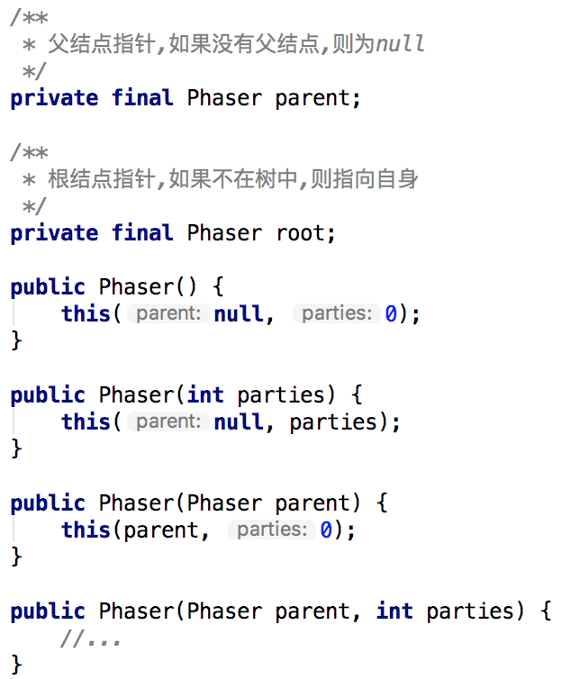

Java多线程进阶（二二）—— J.U.C之synchronizer框架：Phaser
一、Phaser简介
Phaser是JDK1.7开始引入的一个同步工具类，适用于一些需要分阶段的任务的处理。它的功能与 CyclicBarrier和CountDownLatch有些类似，类似于一个多阶段的栅栏，并且功能更强大，我们来比较下这三者的功能：
| 同步器 | 作用 |
|---|---|
| CountDownLatch | 倒数计数器，初始时设定计数器值，线程可以在计数器上等待，当计数器值归0后，所有等待的线程继续执行 |
| CyclicBarrier | 循环栅栏，初始时设定参与线程数，当线程到达栅栏后，会等待其它线程的到达，当到达栅栏的总数满足指定数后，所有等待的线程继续执行 |
| Phaser | 多阶段栅栏，可以在初始时设定参与线程数，也可以中途注册/注销参与者，当到达的参与者数量满足栅栏设定的数量后，会进行阶段升级（advance） |
Phaser中有一些比较重要的概念，理解了这些概念才能理解Phaser的功能。
1.1 phase(阶段)
我们知道，在CyclicBarrier中，只有一个栅栏，线程在到达栅栏后会等待其它线程的到达。
Phaser也有栅栏，在Phaser中，栅栏的名称叫做phase(阶段)，在任意时间点，Phaser只处于某一个phase(阶段)，初始阶段为0，最大达到Integerr.MAX_VALUE，然后再次归零。当所有parties参与者都到达后，phase值会递增。
如果看过之前关于CyclicBarrier的文章，就会知道，Phaser中的phase(阶段)这个概念其实和CyclicBarrier中的Generation很相似，只不过Generation没有计数。
1.2 parties(参与者)
parties(参与者)其实就是CyclicBarrier中的参与线程的概念。
CyclicBarrier中的参与者在初始构造指定后就不能变更，而Phaser既可以在初始构造时指定参与者的数量，也可以中途通过register、bulkRegister、arriveAndDeregister等方法注册/注销参与者。
1.3 arrive(到达) / advance(进阶)
Phaser注册完parties（参与者）之后，参与者的初始状态是unarrived的，当参与者到达（arrive）当前阶段（phase）后，状态就会变成arrived。当阶段的到达参与者数满足条件后（注册的数量等于到达的数量），阶段就会发生进阶（advance）——也就是phase值+1。

1.4 Termination（终止）
代表当前Phaser对象达到终止状态，有点类似于CyclicBarrier中的栅栏被破坏的概念。
1.5 Tiering（分层）
Phaser支持分层（Tiering） —— 一种树形结构，通过构造函数可以指定当前待构造的Phaser对象的父结点。之所以引入Tiering，是因为当一个Phaser有大量参与者（parties）的时候，内部的同步操作会使性能急剧下降，而分层可以降低竞争，从而减小因同步导致的额外开销。
在一个分层Phasers的树结构中，注册和撤销子Phaser或父Phaser是自动被管理的。当一个Phaser的参与者（parties）数量变成0时，如果有该Phaser有父结点，就会将它从父结点中溢移除。
关于Phaser的分层，后续我们在讲Phaser原理时会进一步讨论。
二、Phaser示例
为了更好的理解Phaser的功能，我们来看几个示例：
2.1 示例一
通过Phaser控制多个线程的执行时机：有时候我们希望所有线程到达指定点后再同时开始执行，我们可以利用CyclicBarrier或CountDownLatch来实现，这里给出使用Phaser的版本。
public class PhaserTest1 {
public static void main(String[] args) {
Phaser phaser = new Phaser();
for (int i = 0; i < 10; i++) {
phaser.register(); // 注册各个参与者线程
new Thread(new Task(phaser), "Thread-" + i).start();
}
}
}
class Task implements Runnable {
private final Phaser phaser;
Task(Phaser phaser) {
this.phaser = phaser;
}
@Override
public void run() {
int i = phaser.arriveAndAwaitAdvance(); // 等待其它参与者线程到达
// do something
System.out.println(Thread.currentThread().getName() + ": 执行完任务，当前phase =" + i + "");
}
}
输出：
Thread-8: 执行完任务，当前phase =1
Thread-4: 执行完任务，当前phase =1
Thread-3: 执行完任务，当前phase =1
Thread-0: 执行完任务，当前phase =1
Thread-5: 执行完任务，当前phase =1
Thread-6: 执行完任务，当前phase =1
Thread-7: 执行完任务，当前phase =1
Thread-9: 执行完任务，当前phase =1
Thread-1: 执行完任务，当前phase =1
Thread-2: 执行完任务，当前phase =1
以上示例中，创建了10个线程，并通过register方法注册Phaser的参与者数量为10。当某个线程调用arriveAndAwaitAdvance方法后，arrive数量会加1，如果数量没有满足总数（参与者数量10），当前线程就是一直等待，当最后一个线程到达后，所有线程都会继续往下执行。
注意：
arriveAndAwaitAdvance方法是不响应中断的，也就是说即使当前线程被中断，arriveAndAwaitAdvance方法也不会返回或抛出异常，而是继续等待。如果希望能够响应中断，可以参考awaitAdvanceInterruptibly方法。
2.2 示例二
通过Phaser实现开关。在以前讲CountDownLatch时，我们给出过以CountDownLatch实现开关的示例，也就是说，我们希望一些外部条件得到满足后，然后打开开关，线程才能继续执行，我们看下如何用Phaser来实现此功能。
public class PhaserTest2 {
public static void main(String[] args) throws IOException {
Phaser phaser = new Phaser(1); // 注册主线程,当外部条件满足时,由主线程打开开关
for (int i = 0; i < 10; i++) {
phaser.register(); // 注册各个参与者线程
new Thread(new Task2(phaser), "Thread-" + i).start();
}
// 外部条件:等待用户输入命令
System.out.println("Press ENTER to continue");
BufferedReader reader = new BufferedReader(new InputStreamReader(System.in));
reader.readLine();
// 打开开关
phaser.arriveAndDeregister();
System.out.println("主线程打开了开关");
}
}
class Task2 implements Runnable {
private final Phaser phaser;
Task2(Phaser phaser) {
this.phaser = phaser;
}
@Override
public void run() {
int i = phaser.arriveAndAwaitAdvance(); // 等待其它参与者线程到达
// do something
System.out.println(Thread.currentThread().getName() + ": 执行完任务，当前phase =" + i + "");
}
}
输出：
主线程打开了开关
Thread-7: 执行完任务，当前phase =1
Thread-4: 执行完任务，当前phase =1
Thread-3: 执行完任务，当前phase =1
Thread-1: 执行完任务，当前phase =1
Thread-0: 执行完任务，当前phase =1
Thread-9: 执行完任务，当前phase =1
Thread-8: 执行完任务，当前phase =1
Thread-2: 执行完任务，当前phase =1
Thread-5: 执行完任务，当前phase =1
Thread-6: 执行完任务，当前phase =1
以上示例中，只有当用户按下回车之后，任务才真正开始执行。这里主线程Main相当于一个协调者，用来控制开关打开的时机，arriveAndDeregister方法不会阻塞，该方法会将到达数加1，同时减少一个参与者数量，最终返回线程到达时的phase值。
2.3 示例三
通过Phaser控制任务的执行轮数
public class PhaserTest3 {
public static void main(String[] args) throws IOException {
int repeats = 3; // 指定任务最多执行的次数
Phaser phaser = new Phaser() {
@Override
protected boolean onAdvance(int phase, int registeredParties) {
System.out.println("---------------PHASE[" + phase + "],Parties[" + registeredParties + "] ---------------");
return phase + 1 >= repeats || registeredParties == 0;
}
};
for (int i = 0; i < 10; i++) {
phaser.register(); // 注册各个参与者线程
new Thread(new Task3(phaser), "Thread-" + i).start();
}
}
}
class Task3 implements Runnable {
private final Phaser phaser;
Task3(Phaser phaser) {
this.phaser = phaser;
}
@Override
public void run() {
while (!phaser.isTerminated()) { //只要Phaser没有终止, 各个线程的任务就会一直执行
int i = phaser.arriveAndAwaitAdvance(); // 等待其它参与者线程到达
// do something
System.out.println(Thread.currentThread().getName() + ": 执行完任务");
}
}
}
输出：
---------------PHASE[0],Parties[5] ---------------
Thread-4: 执行完任务
Thread-1: 执行完任务
Thread-2: 执行完任务
Thread-3: 执行完任务
Thread-0: 执行完任务
---------------PHASE[1],Parties[5] ---------------
Thread-0: 执行完任务
Thread-3: 执行完任务
Thread-1: 执行完任务
Thread-4: 执行完任务
Thread-2: 执行完任务
---------------PHASE[2],Parties[5] ---------------
Thread-2: 执行完任务
Thread-4: 执行完任务
Thread-1: 执行完任务
Thread-0: 执行完任务
Thread-3: 执行完任务
以上示例中，我们在创建Phaser对象时，覆写了onAdvance方法，这个方法类似于CyclicBarrier中的barrierAction任务。
也就是说，当最后一个参与者到达时，会触发onAdvance方法，入参phase表示到达时的phase值，registeredParties表示到达时的参与者数量，返回true表示需要终止Phaser。
我们通过phase + 1 >= repeats ，来控制阶段（phase）数的上限为2（从0开始计），最终控制了每个线程的执行任务次数为repeats次。
2.4 示例四
Phaser支持分层功能，我们先来考虑下如何用利用Phaser的分层来实现高并发时的优化，在示例三中，我们其实创建了10个任务，然后10个线程共用一个Phaser对象，如下图：

如果任务数继续增大，那么同步产生的开销会非常大，利用Phaser分层的功能，我们可以限定每个Phaser对象的最大使用线程（任务数），如下图：

可以看到，上述Phasers其实构成了一颗多叉树，如果任务数继续增多，还可以将Phaser的叶子结点继续分裂，然后将分裂出的子结点供工作线程使用。
public class PhaserTest4 {
private static final int TASKS_PER_PHASER = 4; // 每个Phaser对象对应的工作线程（任务）数
public static void main(String[] args) throws IOException {
int repeats = 3; // 指定任务最多执行的次数
Phaser phaser = new Phaser() {
@Override
protected boolean onAdvance(int phase, int registeredParties) {
System.out.println("---------------PHASE[" + phase + "],Parties[" + registeredParties + "] ---------------");
return phase + 1 >= repeats || registeredParties == 0;
}
};
Tasker[] taskers = new Tasker[10];
build(taskers, 0, taskers.length, phaser); // 根据任务数,为每个任务分配Phaser对象
for (int i = 0; i < taskers.length; i++) { // 执行任务
Thread thread = new Thread(taskers[i]);
thread.start();
}
}
private static void build(Tasker[] taskers, int lo, int hi, Phaser phaser) {
if (hi - lo > TASKS_PER_PHASER) {
for (int i = lo; i < hi; i += TASKS_PER_PHASER) {
int j = Math.min(i + TASKS_PER_PHASER, hi);
build(taskers, i, j, new Phaser(phaser));
}
} else {
for (int i = lo; i < hi; ++i)
taskers[i] = new Tasker(i, phaser);
}
}
}
class Task4 implements Runnable {
private final Phaser phaser;
Task4(Phaser phaser) {
this.phaser = phaser;
this.phaser.register();
}
@Override
public void run() {
while (!phaser.isTerminated()) { //只要Phaser没有终止, 各个线程的任务就会一直执行
int i = phaser.arriveAndAwaitAdvance(); // 等待其它参与者线程到达
// do something
System.out.println(Thread.currentThread().getName() + ": 执行完任务");
}
}
}
输出：
---------------PHASE[0],Parties[3] ---------------
Thread-9: 执行完任务
Thread-6: 执行完任务
Thread-5: 执行完任务
Thread-4: 执行完任务
Thread-1: 执行完任务
Thread-0: 执行完任务
Thread-7: 执行完任务
Thread-8: 执行完任务
Thread-2: 执行完任务
Thread-3: 执行完任务
---------------PHASE[1],Parties[3] ---------------
Thread-3: 执行完任务
Thread-7: 执行完任务
Thread-0: 执行完任务
Thread-1: 执行完任务
Thread-5: 执行完任务
Thread-8: 执行完任务
Thread-2: 执行完任务
Thread-9: 执行完任务
Thread-6: 执行完任务
Thread-4: 执行完任务
---------------PHASE[2],Parties[3] ---------------
Thread-4: 执行完任务
Thread-2: 执行完任务
Thread-8: 执行完任务
Thread-0: 执行完任务
Thread-3: 执行完任务
Thread-9: 执行完任务
Thread-6: 执行完任务
Thread-7: 执行完任务
Thread-1: 执行完任务
Thread-5: 执行完任务
三、Phaser原理
Phaser是本系列至今为止，内部结构最为复杂的同步器之一。在开始深入Phaser原理之前，我们有必要先来讲讲Phaser的内部组织结构和它的设计思想。
3.1 Phaser的内部结构
之前我们说过，Phaser支持树形结构，在示例四中，也给出了一个通过分层提高并发性和程序执行效率的例子。一个复杂分层结构的Phaser树的内部结构如下图所示：
上面图中的几点关键点：
- 树的根结点root链接着两个“无锁栈”——Treiber Stack，用于保存等待线程（比如当线程等待Phaser进入下一阶段时，会根据当前阶段的奇偶性，把自己挂到某个栈中），所有Phaser对象都共享这两个栈。
- 当首次将某个Phaser结点链接到树中时，会同时向该结点的父结点注册一个参与者。
为什么需要向父结点注册参与者？
首先我们要明白对于Phaser来说，什么时候会发生跃迁（advance）进入下一阶段？
废话，当然是等它所有参与者都到达的时候。那么它所等待的参与者都包含那几类呢？
①对于一个孤立的Phaser结点（也可以看成是只有一个根结点的树）
其等待的参与者，就是显式注册的参与者，这也是最常见的情况。
比如下图，如果有10个Task共用这个Phaser，那等待的参与者数就是10，当10个线程都到达后，Phaser就会跃迁至下一阶段。
②对于一个非孤立的Phaser叶子结点，比如下图中标绿的叶子结点
这种情况和①一样，子Phaser1和子Phaser2等待的参与者数是4，子Phaser3等待的参与者数是2。
③对于一个非孤立非叶子的Phaser结点，比如上图中标蓝色的结点
这是最特殊的一种情况，这也是Phaser同步器关于分层的主要设计思路。
这种情况，结点所等待的参与者数目包含两部分：
- 直接显式注册的参与者（通过构造器或register方法）。——等于0
- 子结点的数目。——等于3
也就是说在上图中，当左一的子Phaser1的4个参与者都到达后，它会通知父结点Phaser，自己的状态已经OK了，这时Phaser会认为子Phaser1已经准备就绪，会将自己的到达者数量加1，同理，当子Phaser2和子Phaser3的所有参与者分别到达后，它们也会依次通知Phaser，只有当Phaser（根结点）的到达者数量为3时，才会释放“无锁栈”中等待着的线程，并将阶段数phase增加1。
这是一种层层递归的设计，只要当根结点的所有参与者都到达后（也就是到达参数者数等于其子结点数），所有等待线程才会放行，栅栏才会进入下一阶段。
了解了上面这些，我们再来看Phaser的源码。
3.2 同步状态定义
Phaser使用一个long类型来保存同步状态值State，并按位划分不同区域的含义，通过掩码和位运算进行赋值和操作：
3.3 栈结点定义
“无锁栈”——Treiber Stack，保存在Phaser树的根结点中，其余所有Phaser子结点共享这两个栈：
结点的定义非常简单，内部保存了线程信息和Phsaer对象信息：
注意：
ForkJoinPool.ManagedBlocker是当栈包含ForkJoinWorkerThread类型的QNode阻塞的时候，ForkJoinPool内部会增加一个工作线程来保证并行度，后续讲ForkJoin框架时我们会进行分析。*
3.4 Phaser的构造器
Phaser一共有4个构造器，可以看到，最终其实都是调用了Phaser(Phaser parent, int parties)这个构造器。

Phaser(Phaser parent, int parties)的内部实现如下，关键就是给当前的Phaser对象指定父结点时，如果当前Phaser的参与者不为0，需要向父Phaser注册一个参与者（代表当前结点本身）：
3.5 注册参与者
Phaser提供了两个注册参与者的方法：
- register：注册单个参与者
- bulkRegister：批量注册参与者
这两个方法都很简单，内部调用了doRegister方法：
/**
* 注册指定数目{#registrations}的参与者
*/
private int doRegister(int registrations) {
// 首先计算注冊后当前State要调整的值adjust
long adjust = ((long) registrations << PARTIES_SHIFT) | registrations;
final Phaser parent = this.parent;
int phase;
for (; ; ) {
long s = (parent == null) ? state : reconcileState(); // reconcileState()调整当前Phaser的State与root一致
int counts = (int) s;
int parties = counts >>> PARTIES_SHIFT; // 参与者数目
int unarrived = counts & UNARRIVED_MASK; // 未到达的数目
if (registrations > MAX_PARTIES - parties)
throw new IllegalStateException(badRegister(s));
phase = (int) (s >>> PHASE_SHIFT); // 当前Phaser所处的阶段phase
if (phase < 0)
break;
if (counts != EMPTY) { // CASE1: 当前Phaser已经注册过参与者
if (parent == null || reconcileState() == s) {
if (unarrived == 0) // 参与者已全部到达栅栏, 当前Phaser正在Advance, 需要阻塞等待这一过程完成
root.internalAwaitAdvance(phase, null);
else if (UNSAFE.compareAndSwapLong(this, stateOffset, s, s + adjust)) // 否则,直接更新State
break;
}
} else if (parent == null) { // CASE2: 当前Phaser未注册过参与者（第一次注册）,且没有父结点
long next = ((long) phase << PHASE_SHIFT) | adjust;
if (UNSAFE.compareAndSwapLong(this, stateOffset, s, next)) // CAS更新当前Phaser的State值
break;
} else { // CASE3: 当前Phaser未注册过参与者（第一次注册）,且有父结点
synchronized (this) {
if (state == s) {
phase = parent.doRegister(1); // 向父结点注册一个参与者
if (phase < 0)
break;
while (!UNSAFE.compareAndSwapLong(this, stateOffset, s,
((long) phase << PHASE_SHIFT) | adjust)) {
s = state;
phase = (int) (root.state >>> PHASE_SHIFT);
}
break;
}
}
}
}
return phase;
}
doRegister方法用来给当前Phaser对象注册参与者，主要有三个分支：
①当前Phaser已经注册过参与者
如果参与者已经全部到达栅栏，则当前线程需要阻塞等待（因为此时phase正在变化，增加1到下一个phase），否则直接更新State。
②当前Phaser未注册过参与者（第一次注册），且没有父结点
这种情况最简单，直接更新当前Phaser的State值。
③当前Phaser未注册过参与者（第一次注册），且有父结点
说明当前Phaser是新加入的叶子结点，需要向父结点注册自身，同时更新自身的State值。
注意:
reconcileState方法比较特殊，因为当出现树形结构时，根结点首先进行phase的更新，所以需要显式同步，使当前结点和根结点保持一致。
另外，阻塞等待调用的是internalAwaitAdvance方法，其实就是根据当前阶段phase，将线程包装成结点加入到root结点所指向的某个“无锁栈”中：
/**
* internalAwaitAdvance的主要逻辑就是：当前参与者线程等待Phaser进入下一个阶段(就是phase值变化).
* @return 返回新的阶段
*/
private int internalAwaitAdvance(int phase, QNode node) {
// assert root == this;
releaseWaiters(phase - 1); // 清空不用的Treiber Stack（奇偶Stack交替使用）
boolean queued = false; // 入队标识
int lastUnarrived = 0;
int spins = SPINS_PER_ARRIVAL;
long s;
int p;
while ((p = (int) ((s = state) >>> PHASE_SHIFT)) == phase) {
if (node == null) { // spinning in noninterruptible mode
int unarrived = (int) s & UNARRIVED_MASK;
if (unarrived != lastUnarrived &&
(lastUnarrived = unarrived) < NCPU)
spins += SPINS_PER_ARRIVAL;
boolean interrupted = Thread.interrupted();
if (interrupted || --spins < 0) { // need node to record intr
node = new QNode(this, phase, false, false, 0L);
node.wasInterrupted = interrupted;
}
} else if (node.isReleasable()) // done or aborted
break;
else if (!queued) { // 将结点压入栈顶
AtomicReference<QNode> head = (phase & 1) == 0 ? evenQ : oddQ;
QNode q = node.next = head.get();
if ((q == null || q.phase == phase) &&
(int) (state >>> PHASE_SHIFT) == phase) // avoid stale enq
queued = head.compareAndSet(q, node);
} else {
try {
// 阻塞等待
ForkJoinPool.managedBlock(node);
} catch (InterruptedException ie) {
node.wasInterrupted = true;
}
}
}
if (node != null) {
if (node.thread != null)
node.thread = null; // avoid need for unpark()
if (node.wasInterrupted && !node.interruptible)
Thread.currentThread().interrupt();
if (p == phase && (p = (int) (state >>> PHASE_SHIFT)) == phase)
return abortWait(phase); // possibly clean up on abort
}
releaseWaiters(phase);
return p;
}
3.5 参与者到达并等待
arriveAndAwaitAdvance的主要逻辑如下：
首先将同步状态值State中的未到达参与者数量减1，然后判断未到达参与者数量是否为0?
如果不为0，则阻塞当前线程，以等待其他参与者到来；
如果为0，说明当前线程是最后一个参与者，如果有父结点则对父结点递归调用该方法。（因为只有根结点的未到达参与者数目为0时），才会进阶phase。
四、Phaser类/接口声明
4.1 类声明
4.2 构造器声明